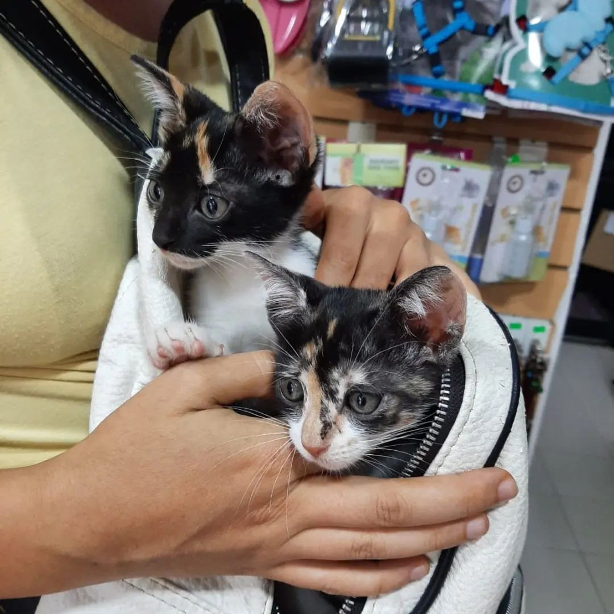

TRÁNSITO
¿Qué es ser tránsito?
¡Existen muchas formas de colaborar con las organizaciones que cuidan a los perros y gatos en adopción! 🏠 Mientras nos quedamos en casa, podemos ayudar ofreciendo nuestro hogar transitorio para darle contención a un perro o gato durante su recuperación o hasta que encuentre un hogar definitivo. 🐾 Si queres ofrecer tu hogar de tránsito, contactate con las organizaciones solidarias y animate a esta experiencia.